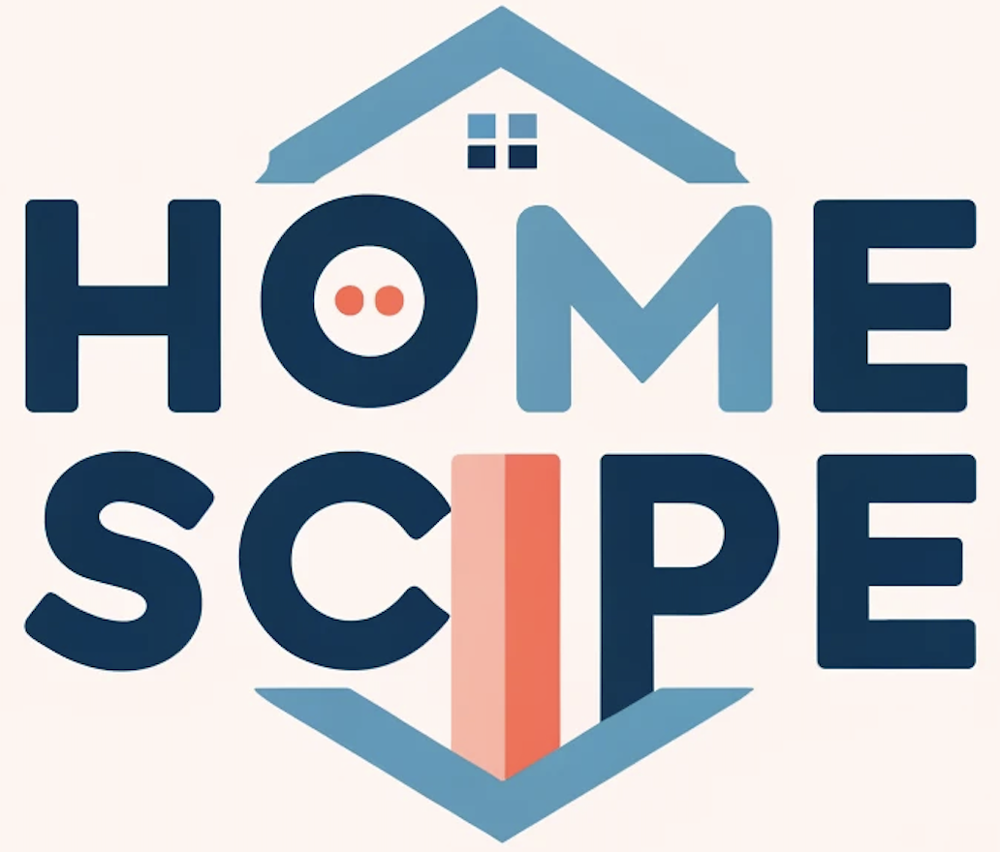
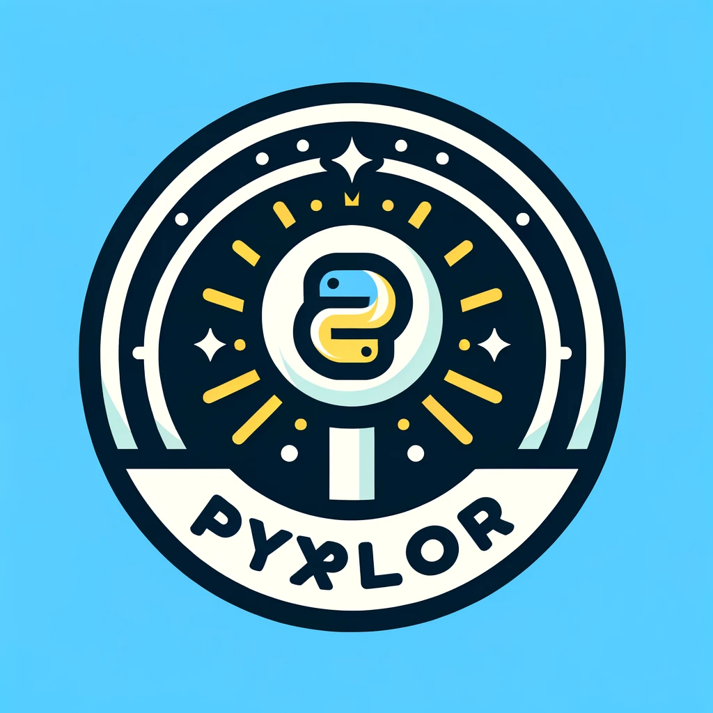
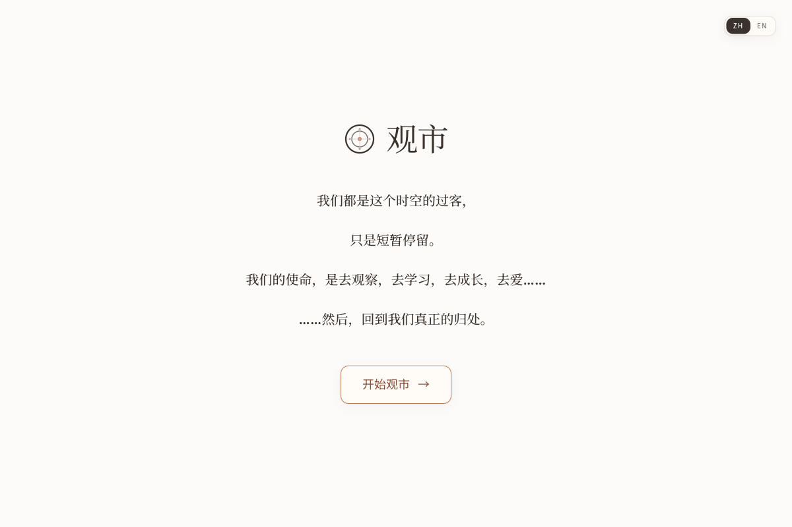

Projects
Selected work
Projects
From customer economics to market structure — selected work designed to support a decision.
Churn Insights
End-to-end view of customer churn — from warehouse to executive dashboard — so the business can see which segments, prices, and behaviors actually drive attrition.

CryptoPulse
Built for traders and analysts who need more than a price chart. Compare spot and derivatives volume, read the 200-day regime, and map estimated liquidation clusters across BTC, ETH, SOL, and BNB — in an Apple-style interface.

03 / Other
Other work
Personal platforms for reading archives and investment research — how I think about markets.

Reading Notes
An editorial journal with a magazine layout. Volume 01 now holds nineteen essays — cycles, risk, investing, and how to decide.

Let’s work together
Open to roles in business analysis, investment research, and decision support.